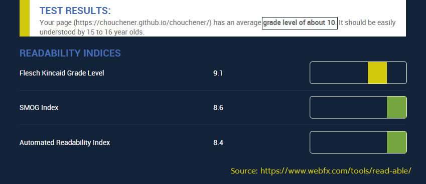
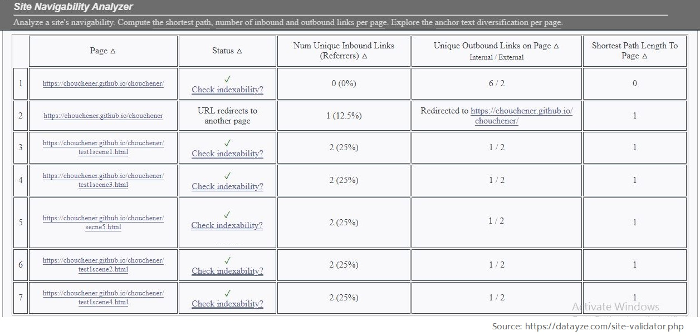
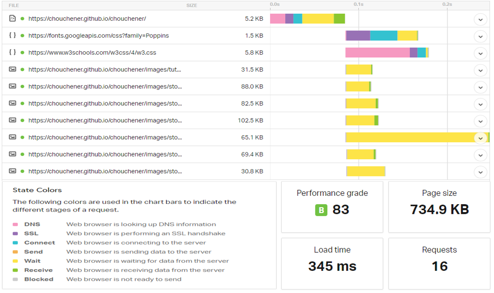

Results of Evaluating the Experimentation Interface (website)
To have a highly intuitive, useful and bug-free Interface that require no specialist training, the website was iteratively optimized and tested under the guidance of a software-developer and two respectively Industrial and data-science engineering students as (UX) volunteers. We tested the usability of the website on the basis of four axes:
Users' experience was taken into consideration as well. We observed, recorded and anlysed the actions of users regarding the related tasks.Results of Usability Tests
| Results for Readability test | Figure illustrating the results for Readability test |
We used webfx that calculates the Flesh Kinkaid Level, the SMOG Index and the Automated Readability Index. We got the results based on 3 axes of Readability:
|

|
| Results for Accessibility test | Figure illustrating the results for Accessibility test |
We used wave that answers the following questions: Does the site work in as many browsing situations as possible? Is the site responsive, flexibly changing the layout depending on how the user views it?
Are HTML tags being used correctly?
Did the colors use high contrast? Do the colors create a hindrance to people with colorblindness or poor vision?
We got the results based on 4 axes of Accessibility:
|

|
| Results for Navigability test | Figure illustrating the results for Navigability test |
We used datayze SpiderBot that calculates the shortest path from a splash page to any internal page, the overall connectivity of the site, highly connected hubs and destination leaf nodes. It finds the linking errors too.
We got the results based on 3 axes of Navigability:
|

|
| Results for Website Speed test | Figure illustrating the results for Website Speed test |
We used pingdom that evaluates the HTTP response codes using colored-performance indicators.
We got the results based on 3 axes of WebsiteSpeed:
|

|